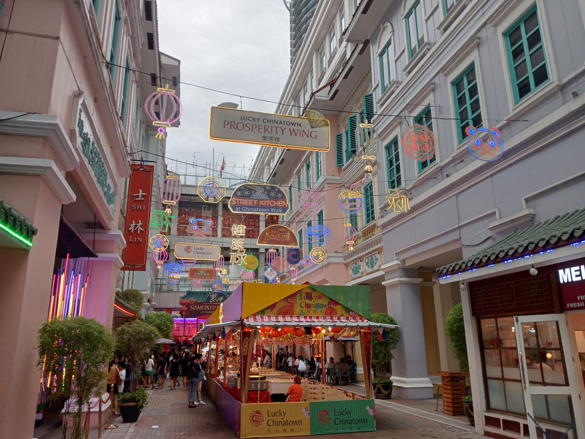

GALA SYSTEM
MANILA BARKADA GALA
Exclusive Group Experience Proposal
Rizal Park (Luneta) - Ermita

Type: Park
Activities: Group photos, optional photoshoot with local photographers, picnic, garden walk, monument sightseeing
Paco Park - Paco

Type: Historical Park
Activities: Quiet chill time, aesthetic photo sessions, relaxing walks, nature appreciation
Arroceros Forest Park - Lawton

Type: Eco Park
Activities: Tree walks, eco-photoshoots, bonding talks, peaceful tambay sessions
Intramuros - Manila

Type: Heritage
Activities: Heritage walking tour, street photography, architecture appreciation, group selfies
Fort Santiago - Intramuros

Type: Historical Fort
Activities: Educational mini-tour, cinematic group shots, storytelling moments
Manila Cathedral - Intramuros

Type: Church
Activities: Quiet reflection, architecture photos, respectful visit
SM City Manila - Ermita

Type: Mall
Activities: Food trip, arcade time, mirror selfies, shopping, rest stops
Robinsons Place Manila - Ermita

Type: Mall
Activities: Restaurant hopping, coffee breaks, group table bonding
Binondo (Chinatown) - Binondo
Type: Food Area
Activities: Street food crawling, food rating games, cultural food discovery
Manila Baywalk - Roxas Blvd

Type: Sunset Spot
Activities: Sunset photography, deep talks, group photos, street food bonding
Dolomite Beach - Roxas Blvd

Type: Beach Walk
Activities: Walking by the shore, aesthetic sunset pics, relaxing tambay
Rajah Sulayman Park - Malate

Type: Park
Activities: Sit-down bonding sessions, music sharing, group chilling